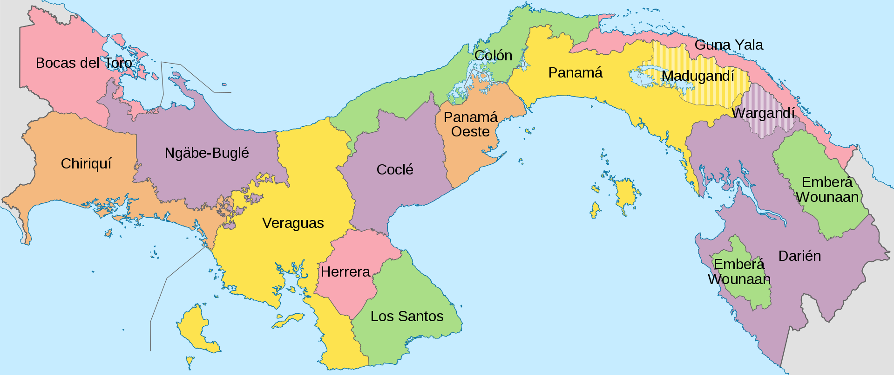
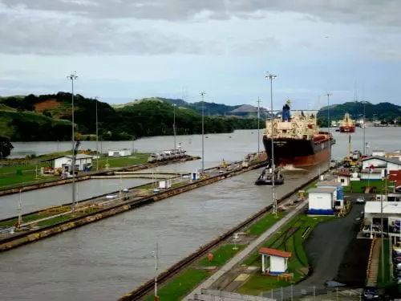

Panamá, oficialmente República de Panamá, es un país ubicado en el noroeste de Sudamérica y sureste de América Central. Su capital es Ciudad de Panamá.12 Limita al norte con el mar Caribe, al sur con el océano Pacífico, al este con Colombia y al oeste con Costa Rica. Tiene una extensión de 75 420 km².1 Localizado en el istmo del mismo nombre, franja que une a América del Sur con América Central, su territorio montañoso solamente es interrumpido por la cuenca del Canal de Panamá, la vía interoceánica que une al océano Atlántico con el océano Pacífico. Su condición de país de tránsito lo convirtió tempranamente en un punto de encuentro de culturas provenientes de todo el mundo. El país es el escenario geográfico del canal, obra que facilita la comunicación entre las costas de los océanos Atlántico y Pacífico y que influye significativamente en el comercio mundial. Su población actual en 2019 es de 4 567 310 personas.
Historia de Panamá
La historia de Panamá ha sido ampliamente influenciada por la posición estratégica de este istmo estrecho que une América del Norte con América del Sur y que separa el océano Pacífico del océano Atlántico. Los Cunas, los Chocos y los Guaymis fueron algunas de las tribus indígenas que han ocupado la región. Aún cuando estas civilizaciones no fueron tan avanzadas como la de los Mayas o los Incas, puede que hayan sufrido la influencia de ellas. El explorador Rodrigo de Bastidas desembarcó sobre el territorio en 1501 y, al año siguiente, Cristóbal Colón reivindicó Panamá en nombre de España.
Panamá sirvió de base para el transporte marítimo de los minerales, metales preciosos y tesoros provenientes del Perú y encaminados hacia España por un eje que atravezaba el país de un océano al otro, de Panamá al puerto de Nombre de Dios, sobre el Atlántico. Dependiente del virreinato del Perú, Panamá fue integrada a la Nueva Granada a comienzos del siglo XVII y permaneció bajo dominación española hasta 1821. La Nueva Granada fue entonces unida a la República de la Gran Colombia, creada bajo el arbitrio de Simón Bolívar. En 1826, Bolívar reunió a los gobernantes de cinco estados de la Gran Colombia, en Panamá, durante el congreso panamericano, a fin de construir con ellos la unidad del continente sudamericano. Murió, sin embargo, en 1830, antes de haber consolidado esta unificación.
Gobierno y política
La República de Panamá es un Estado Independiente y Soberano, asentado en un territorio propio, en donde se observan y respetan los derechos individuales y sociales establecidos en la Constitución Política. La voluntad de las mayorías, está representada por el libre sufragio.
El Poder Público emana del pueblo y se ejerce por medio de tres Órganos: Legislativo; Ejecutivo y Judicial, armonizados en la separación, unidos en la cooperación y limitados por el clásico sistema de frenos y contrapesos.
Se encuentran tres organizaciones independientes cuyas responsabilidades están claramente definidas en la Constitución Política:
-La Contraloría General de la República: tiene la obligación de fiscalizar los fondos públicos.
-El Tribunal Electoral, que tiene que garantizar la libertad, la honradez y la eficacia del sufragio popular.
-El Ministerio Público, que vela por los intereses del Estado y de los municipios.
Organización territorial

Hasta el 31 de diciembre de 2013 la división política de la República de Panamá comprendía 10 provincias, 81 distritos o municipios, 5 comarcas indígenas de nivel provincial y 679 corregimientos de los cuales dos son comarcales. El 1 de enero de 2014 se creó la provincia de Panamá Oeste que se segregó de la provincia de Panamá y se compone de los distritos que se ubican al oeste del canal de Panamá.
Turismo
Mejores lugares turísticos de panamá.
1. Canal de Panama.

Actualmente el canal de Panamá, además de funcionar como medio principal para el transporte de naves marinas, ha empezado a tener un gran espacio en el turismo dada la curiosidad de los extranjeros por este complicado sistemas de esclusas que llevan desde el Atlántico al Pacifico a miles de buques durante todo el año.
2. Bocas del toro
Bocas del Toro, un archipiélago rodeado de islas, isletas y cayos que proporcionan un sinfín de actividades para aquellos que se aventuren a explorarlo.Te agradarán sus extensas playas donde el buceo y el surf son las actividades reinantes, y sus distintos parques ecológicos.
3. San Blas
San Blas, el complejo archipiélago conformado por 365 islas. Alrededor de 50 están habitadas por sus pobladores y por los guardianes de estas tierras, ya que ellos no han permitido que su enorme reserva natural sea modificada con complejas edificaciones hoteleras. Además, esta isla es para aquellos temerarios mochileros o los amantes del ecoturismo que no les importa vivir con el mínimo de comodidades pero sí disfrutando experiencias al máximo.
4. Panamá Viejo
Llegar a esta zona arqueológica será como transportarte en el tiempo, ya que es de los lugares de Panamá más visitados. Solía estar establecida la primera ciudad panameña la cual estuvo en pie por más de 150 años hasta que, según la historia, la invasión del pirata Morgan trajo la destrucción a este pequeño poblado en el que indígenas, españoles y africanos esclavos convivían. Hoy es un sitio mítico, lleno de cultura, ruinas y sitios interesantes para explorar lo que fue la primera ciudad española en el Pacífico.
5. Colón
Entre los mejores lugares para visitar en Panamá está un espacio caribeño muy cercano al canal de Panamá. Así es como se puede describir la zona portuaria que lleva el apellido del conquistador de América, y es que en ella se produce el mayor intercambio de relaciones comerciales, pues cuenta con la zona libre más grande de Latinoamérica.
Cultura
En Panamá existen siete culturas indígenas que practican costumbres ancestrales. También hay museos, sitios arqueológicos y tres ciudades históricas coloniales con fortalezas, iglesias y conventos que datan de los siglos XVI al XIX.
El folclore varía en cada región y está representado por el traje típico, la pollera, la comida y platos tradicionales, así como la música y el baile.
Los carnavales son una de las fiestas principales de Panamá, especialmente el carnaval de Panamá el carnaval de Las Tablas y el carnaval de Chitré, en la capital de la provincia de Los Santos y Herrera.